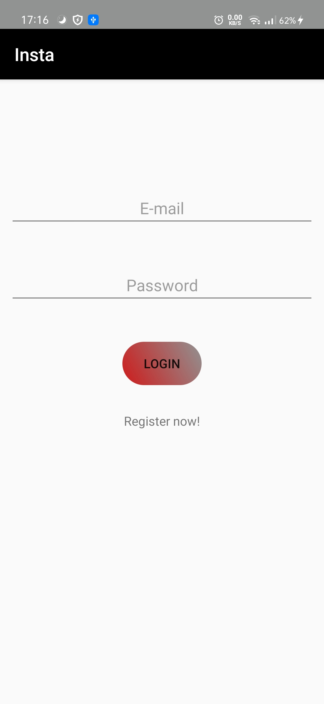
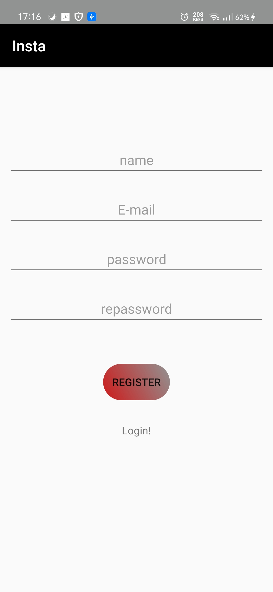

Insta App
Main Activity
Main Activity is the the launcher of the activity that firstly check if this device that the app is intalled in is already logged in or not.
if it is already logged in it goes to Feed activiy and if it is not logged in it goes to show its UI components. Within Login components, the user can enter
his username and password which are required. if the connection is got down there is an alert will be shown and if the username or the password is not correct
there is also an alert will be shown

Register Activity
Within Register Activity, the user can enter his name, username, password, and reenter the password. if the connection is got down
there is an alert will be shown and if the username is already found in the firebase auth there is also an alert will be shown to go login

Feed Activity
The Feed Activity is a basic activity that contains all the posts that this user uploaded. if the user is connected to the internet, the backend code will
get the posts from his path in firebase database and load them to the local database if they are not loaded, and if he is not connected,
the code will get posts from the local database which is already loaded with the posts from firebase database
Profile Activity
The Profile Activity is an empty activity that contains the info of that user, his profile pic, his name, bio, and username.
it contains an icon to go edit profile info

Edit Profile Activity
It goes to show when the user clicked on the edit icon in the Profile Activity. the user can change/set his profile pic, his bio, and his name.

Visit Profile Activity
It goes to show when the user enter a token in the search bar in feed action and this token must be correct and is already found in the database
he can take it from his friend and this token is the uid of the user in firebase auth. it shows the his profile with all the images that he uploade befor.

Add Image Activity
it contains three main components, ImageView, two EditTexts for title and description and add button to submit the adding procces only
the image uri is required.